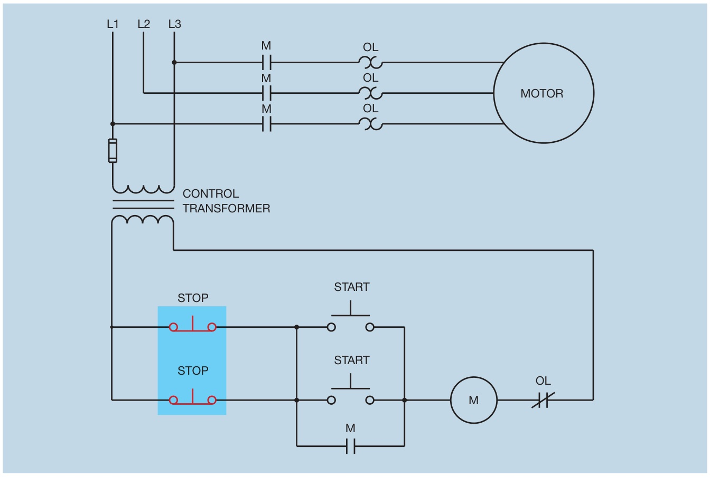
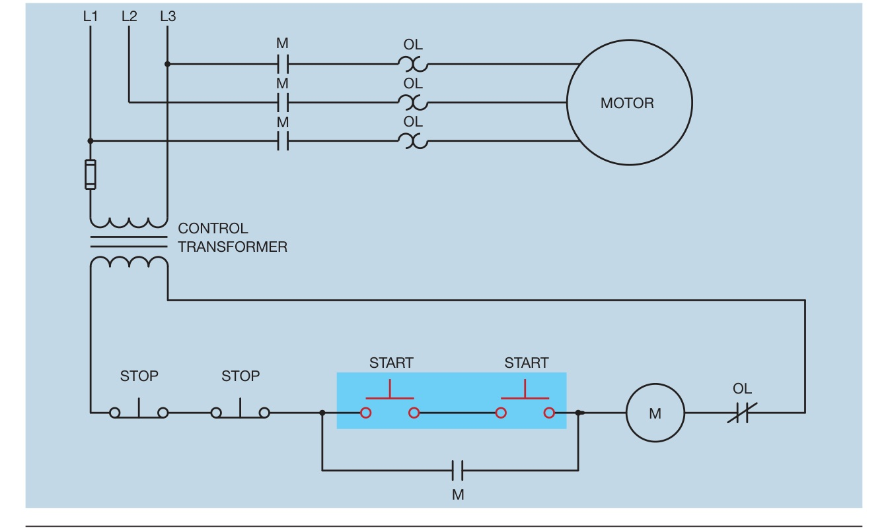
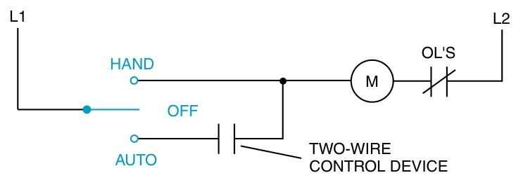
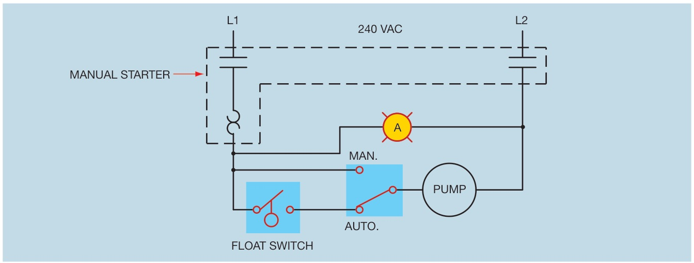

เครื่องจักรยาว ๆ เช่น สายพานลำเลียง ต้องสั่งเริ่มและหยุดได้จากหลายจุด กฎมีข้อเดียว: ปุ่มหยุดต่ออนุกรม ปุ่มเริ่มต่อขนาน หน้านี้ให้ลองต่อถูกและต่อผิดแล้วกดดูเองว่าต่างกันอย่างไร ปิดท้ายด้วยสวิตช์มือ-หยุด-อัตโนมัติ (hand-off-auto) ของปั๊มน้ำ ที่เลือกได้ว่าจะสั่งด้วยมือหรือให้สวิตช์ลูกลอยสั่ง
A long machine, such as a conveyor, must be started and stopped from several places. There is one rule: stops in series, starts in parallel. This page lets you wire it right and wrong and press the buttons to see the difference, and ends with the hand-off-auto switch of a pump, which is run by hand or left to its float switch.
จุดที่ 1 มีปุ่มหยุด S1 และปุ่มเริ่ม S2 จุดที่ 2 มีปุ่มหยุด S3 และปุ่มเริ่ม S4 เลือกแบบการต่อ แล้วกดปุ่มค้างในวงจรหรือที่ปุ่มของสองจุดสั่งงานด้านล่าง ลองเริ่มจากจุดหนึ่งแล้วหยุดจากอีกจุด จากนั้นกด "ทดลองครบ 5 แบบ" ให้เครื่องทดลองแทนแล้วบันทึกผลลงตาราง ทำให้ครบทั้งสามแบบการต่อแล้วเปิดสรุป
Station 1 has stop S1 and start S2, station 2 has stop S3 and start S4. Choose a wiring, then hold buttons in the circuit or on the two stations below; start from one station and stop from the other. Then press "Run all 5 trials" to have the trials done for you and recorded in the table. Do all three wirings, then open the summary.
UMC5 ใช้สองรูปนี้อธิบายการต่อผิด (ส่วนที่แรเงาคือจุดที่ผิด): รูป 8.6 ปุ่มหยุดต่อขนานกัน กดตัวเดียวกระแสยังไหลผ่านอีกตัว มอเตอร์ไม่หยุด รูป 8.7 ปุ่มเริ่มต่ออนุกรม ต้องกดทั้งสองปุ่มพร้อมกันจึงเริ่มได้ ทั้งสองรูปเป็นแบบ NEMA ที่วาดแนวนอน หน้านี้วาดใหม่เป็นแบบ IEC แนวตั้ง
UMC5 uses these two figures to explain wrong wiring (the shaded part is the mistake): in Fig. 8.6 the stops are in parallel, so pressing one still leaves a path through the other and the motor keeps running; in Fig. 8.7 the starts are in series, so both must be pressed together to start. Both are horizontal NEMA drawings; this page redraws them as vertical IEC circuits.


สายพานยาวต้องมีจุดสั่งงานจุดที่ 3 คือปุ่มหยุด S5 และปุ่มเริ่ม S6 จากวงจรสองจุดที่ต่อถูกในหัวข้อ A (ก) S5 ต่อไว้ตรงไหน (ข) S6 ต่อไว้ตรงไหน (ค) ถ้าจุดที่ 3 อยู่นอกตู้ ต้องเดินสายจากตู้ไปกี่เส้น
A long conveyor needs a third station: stop S5 and start S6. Starting from the correct two-station circuit of section A, (a) where does S5 go? (b) Where does S6 go? (c) If station 3 is outside the panel, how many wires run from the panel to it?
S5 คือสวิตช์เลือก 3 ตำแหน่ง H, 0, A ส่วน S6 คือสวิตช์ลูกลอยในถังน้ำ (ต่อเมื่อน้ำต่ำ ให้ปั๊มเติมน้ำ) บิด S5 แล้วสลับระดับน้ำด้วยปุ่ม S6 ให้ครบทุกคู่ ตารางจะบันทึกให้ สังเกตว่าตำแหน่งไหนที่ลูกลอยไม่มีผลเลย
S5 is a three-position selector (H, 0, A) and S6 is the float switch in the tank (closed when the water is low, so the pump refills it). Turn S5 and change the water level with the S6 button until every combination is recorded. Notice in which position the float has no effect at all.
รูป 19-1 ของ EMC9 คือวงจร HOA แบบง่ายที่สุด: HAND ป้อนไฟเข้าคอยล์ตรง AUTO ป้อนผ่านอุปกรณ์ควบคุมแบบ 2 สาย (เช่น ลูกลอย) ส่วนรูป 3.10 ของ UMC5 เป็นปั๊ม 1 เฟสที่ใช้สตาร์ทเตอร์มือกับสวิตช์ MAN/AUTO และลูกลอย หลักการเดียวกัน
EMC9 Fig. 19-1 is the simplest HOA circuit: HAND feeds the coil directly, AUTO feeds it through a two-wire control device such as a float. UMC5 Fig. 3.10 is a single-phase pump with a manual starter, a MAN/AUTO switch and a float: the same idea.

